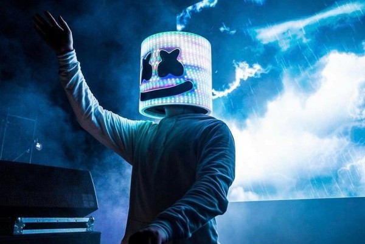

Marshmello
About Marshmello
Marshmello, the enigmatic electronic music producer and DJ, has taken the global music scene by storm with his signature marshmallow-shaped helmet and infectious beats. Rising to fame in the mid-2010s, Marshmello quickly became known for his catchy remixes of songs by Jack Ü and Zedd, as well as his original hits like “Alone,” “Silence” featuring Khalid, and “Friends” with Anne-Marie. Blending elements of future bass, trap, and pop, his sound appeals to a wide audience across genres and age groups. Despite keeping his identity hidden behind the mask, Marshmello has built a massive brand that goes beyond music — including YouTube content, gaming collaborations, and even a performance inside the video game Fortnite, which drew millions of virtual attendees. He's collaborated with global stars like Bastille, Selena Gomez, and Juice WRLD, further cementing his presence in mainstream culture. Marshmello's persona emphasizes positivity, inclusivity, and fun, making him especially popular among younger fans. He's also been involved in charitable efforts, using his platform to support causes like disaster relief and children's health. With his unique blend of mystery, marketing savvy, and feel-good music, Marshmello continues to be one of the most recognizable and influential figures in electronic dance music today.